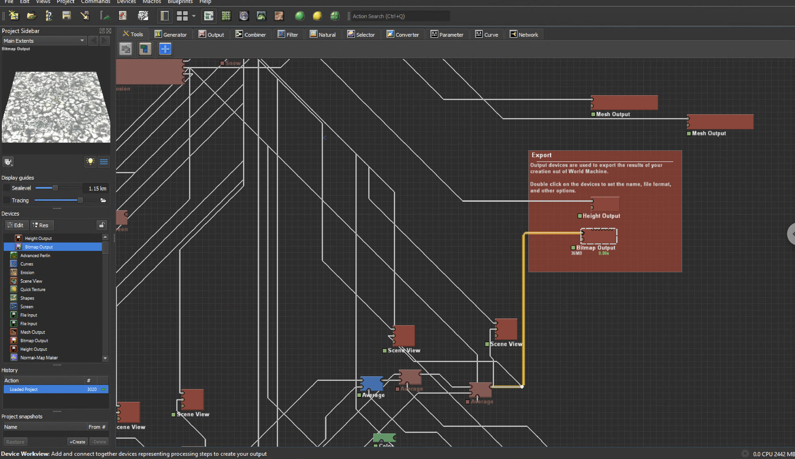
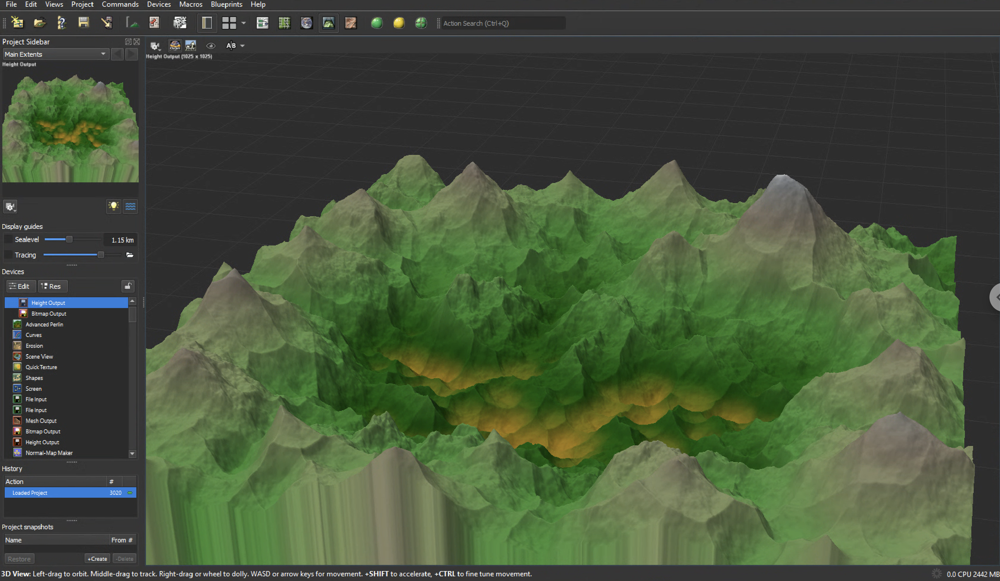

Team of 5 · 6 months
Kumo vs. Mahou
Unity, World Machine


My role
Team leader
An open-world fantasy game where the player hunts spiders with magic. I led a team of 5, wrote the game specification document, and planned the work. I also programmed and made 3D art.
Skills I learned
LeadershipTeam coordinationGame specification documentC# in Unity3D modelingWorld map with procedural tools (World Machine)Textures made from real photos
Difficulties
- Leading a team for the first time
- Keeping all 5 people working toward the same plan
- Building a large world while also leading